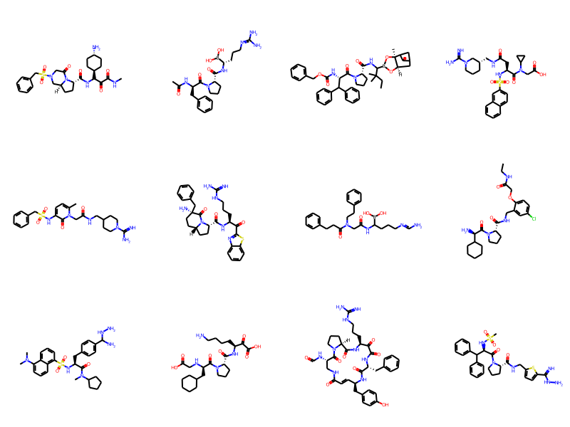
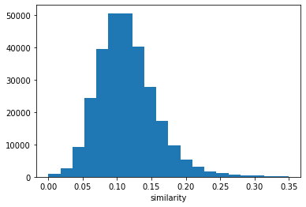
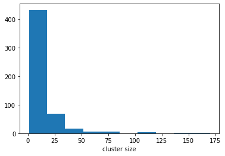
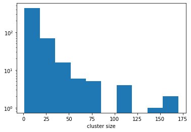
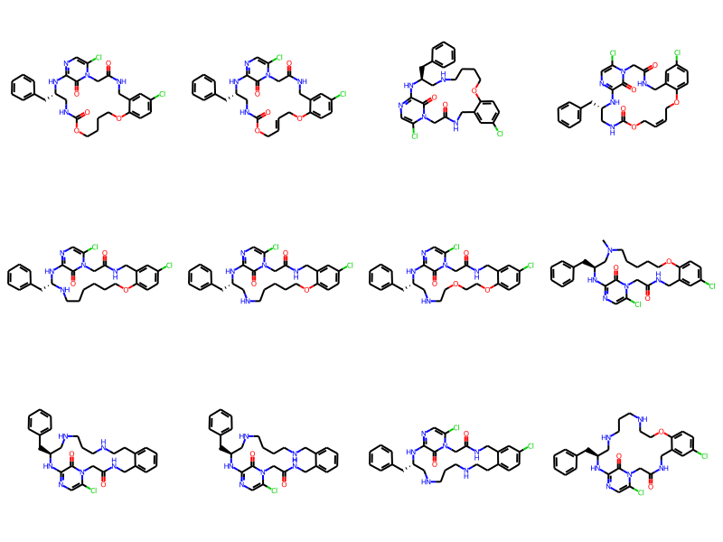
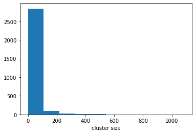

Roger Sayle contributed an implementation of sphere-exclusion picking to the RDKit as part of the 2019.09 release and I recently realized that I’d never blogged about that code or how to use it to do compound clustering. So here’s a short(ish) one.
The RDKit has had an implementation of the MaxMin algorithm for picking diverse compounds for quite a while (Roger made this a lot faster back in 2017). The input to the MaxMin picker is the number of diverse compounds you want. The new algorithm is different: you provide the minimum distance allowed between the compounds picked and it returns a set of compounds satisfying that constraint.
Both of these methods for picking diverse compounds can then be converted into clustering algorithms by defining those picked points to be cluster centroids and then assigning non-picked compounds to the nearest centroid. We’ll do that here for the sphere-exclusion algorithm.
Further reading: - for more about the sphere-exclusion picker and/or learn how it works: here’s Roger’s UGM presentation - Roger’s UGM presentation describing his fast implementation of the MaxMin picker is here - Tim Dudgeon’s guest post on this blog provides a nice overview of the new MaxMin picker.
Populating the interactive namespace from numpy and matplotlib
2020.09.1
First dataset
The dataset we’ll start with is the “new Lessel and Briem” set that I put together as part of this blog post
ms = [x for x in Chem.SmilesMolSupplier('../data/BLSets_selected_actives.txt')]len(ms)
6359
We’ll use MFP2 fingerprints:
from rdkit.Chem import rdMolDescriptorsfps = [rdMolDescriptors.GetMorganFingerprintAsBitVect(m,2,2048) for m in ms]
The new sphere-exclusion code is available using the LeaderPicker:
from rdkit.SimDivFilters import rdSimDivPickerslp = rdSimDivPickers.LeaderPicker()
And we pick compounds by giving the picker the fingerprints and a minimum distance between cluster centroids. Here we’re using a distance threshold of 0.65, which is the random-similarity threshold I found for MFP2 fingeprints.
thresh =0.65# <- minimum distance between cluster centroidspicks = lp.LazyBitVectorPick(fps,len(fps),thresh)print(len(picks))
535
For reference, here’s how long that takes to run:
%timeit lp.LazyBitVectorPick(fps,len(fps),thresh)
41.9 ms ± 262 µs per loop (mean ± std. dev. of 7 runs, 10 loops each)
Let’s look at some of those picked compounds:
Draw.MolsToGridImage([ms[x] for x in picks[:12]],molsPerRow=4)

Just to get a feeling for what’s going on, calculate the similarities between the compounds that have been picked.
from rdkit import DataStructspickfps = [fps[x] for x in picks]nearest = []simhist = []for i,fpi inenumerate(pickfps): tfps = pickfps[:]del tfps[i] sims = DataStructs.BulkTanimotoSimilarity(fpi,tfps) nearest.append(max(sims)) simhist.extend(sims)sorted(nearest,reverse=True)[:10]
Remember that we defined a distance threshold of 0.65, so there should be no similarity values above 0.35 here. It’s good to see that this is true.
Here’s the histogram of distances
hist(simhist,bins=20);xlabel('similarity');

Now let’s assign points to clusters. As mentioned above, we do that by defining the picked compounds to be the centroids and then assign each other compound in the dataset to the nearest cluster centroid.
We don’t currently have a single call for doing this, so here’s a Python function:
from collections import defaultdictimport numpy as npdef assignPointsToClusters(picks,fps): clusters = defaultdict(list)for i,idx inenumerate(picks): clusters[i].append(idx) sims = np.zeros((len(picks),len(fps)))for i inrange(len(picks)): pick = picks[i] sims[i,:] = DataStructs.BulkTanimotoSimilarity(fps[pick],fps) sims[i,i] =0 best = np.argmax(sims,axis=0)for i,idx inenumerate(best):if i notin picks: clusters[idx].append(i)return clusters
clusters = assignPointsToClusters(picks,fps)hist([len(clusters[x]) for x in clusters]);xlabel('cluster size');

hist([len(clusters[x]) for x in clusters],log=True);xlabel('cluster size');

Unfortunately this implementation for assigning compounds to clusters isn’t particularly efficient since it makes a bunch of calls across the Python/C++ interface:
%timeit assignPointsToClusters(picks,fps)
360 ms ± 10.5 ms per loop (mean ± std. dev. of 7 runs, 1 loop each)
I hope to have the chance to improve the performance of this step in a future RDKit release.
Looking at the clusters
Let’s look at the compounds inside a couple of clusters in order to see how closely related they seem to be:
clusts12 = [x for x in clusters iflen(clusters[x])==12]len(clusts12)
10
Draw.MolsToGridImage([ms[x] for x in clusters[clusts12[0]]],molsPerRow=4)

We can also look at the intra-cluster similarities
def intracluster_similarities(cluster,fps): res = [] cfps = [fps[x] for x in cluster]for i,fpid inenumerate(cluster): tres = DataStructs.BulkTanimotoSimilarity(cfps[i],cfps)del tres[i] res.extend(tres)return res
As an aside, this is also a nice opportunity to demonstrate using the MultithreadedSmilesMolSupplier that Shrey Aryan added to the RDKit as part of his 2020 Google Summer of Code project. This new supplier allows molecules to be constructed in parallel and can, in some situations, really speed things up.
t1 = time.time()fps = [rdMolDescriptors.GetMorganFingerprintAsBitVect(m,2,2048) for m in\ Chem.MultithreadedSmilesMolSupplier('../data/BLSets_actives.txt',numWriterThreads=4,delimiter='\t') if m isnotNone]t2 = time.time()print(f"That took {t2-t1 :.2f} seconds to build {len(fps)} fingerprints")
That took 6.02 seconds to build 91663 fingerprints
Running that single threaded (i.e. using a normal SmilesMolSupplier) took 16.8 seconds on my machine.
5.14 s ± 320 ms per loop (mean ± std. dev. of 7 runs, 1 loop each)
t1 = time.time()clusters = assignPointsToClusters(picks,fps)t2=time.time()print(f"That took {t2-t1 :.2f} seconds")hist([len(clusters[x]) for x in clusters]);xlabel('cluster size');
That took 43.34 seconds

And, finally, look at the number of clusters and clustering time as a function of the sphere radius
distance threshold 0.20, 34535 clusters in 66.25 seconds
distance threshold 0.30, 20627 clusters in 37.51 seconds
distance threshold 0.40, 11799 clusters in 21.47 seconds
distance threshold 0.50, 6811 clusters in 12.48 seconds
distance threshold 0.60, 4047 clusters in 7.02 seconds
distance threshold 0.70, 2021 clusters in 3.07 seconds
distance threshold 0.80, 558 clusters in 0.51 seconds
Those two track nicely with each other; more clusters = longer run time:
fig, ax = subplots()ax.plot([x[0] for x in results],[x[1] for x in results]);ax.set_xlabel('Sphere radius');ax.set_ylabel('Num clusters');ax2 = ax.twinx()ax2.plot([x[0] for x in results],[x[2] for x in results],c='r');ax2.set_ylabel('Time (s)');